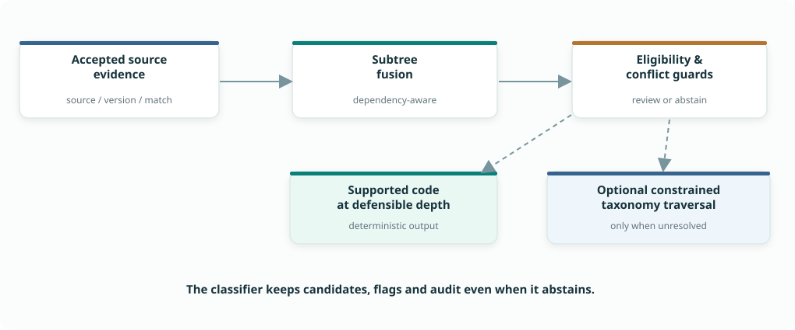

Operational classification policy
The classifier applies a sequence of explicit gates before returning a code. Review, negative evidence, dependent contradictions, and a defensible high-level answer all have distinct meanings.
Decision path

- Map evidence. Match source/category and reviewed name rules, adding trusted Rev. 5 source floors where permitted.
- Fuse and test eligibility. Compute admissible code subtrees and test
NOT_ACTIVITYandUNCODEABLEseparately. - Protect against semantic contradictions. Independent activity versus non-activity, multiple incompatible OSM primary tags, and dependent source conflicts can force abstention.
- Check narrow administrative function. A precise education/health administrative office may be assigned PSIC 84120 only if relevant reviewed activity evidence does not contraindicate it. Ownership does not decide this.
- Respect eligibility and entity matching. Return
NOT_PSIC_ACTIVITY,UNCODEABLE,CONFLICT, orREVIEW_ENTITY_MATCHas appropriate. - Return deterministic fusion when a sufficiently supported code exists; never force a leaf beyond the strongest admissible asserted root.
- Optional traversal. If no deterministic result resolves the case and an LLM backend is configured, use restricted taxonomy descent; an unsupported model answer cannot erase a defensible accepted code.
Scope of the reviewed policy
The 328 packaged rules load by default only for PSIC Rev. 5. --no-reviewed-psic disables the new operational source interpretation, trusted floors, and administrative policy. Explicit custom crosswalks can remain active, so this comparison is a controlled policy change rather than a complete “no classification” mode. Other PSIC revisions do not inherit Rev. 5-specific trusted rules.
Status and audit fields
| Output | Interpretation |
|---|---|
SINGLE, NESTED, INTERSECT |
A determinate outcome from mapped source fusion, with the code's supported hierarchy level. |
UNION |
A broader unresolved alternative set; inspect candidate codes. |
CONFLICT |
Disjoint activity assertions / failed compatibility. |
REVIEW_ENTITY_MATCH |
Semantic disagreement and upstream match-risk indicators. |
NOT_PSIC_ACTIVITY |
Source evidence establishes the feature is not an economic activity. |
UNCODEABLE |
Inadequate semantic resolution, different from a negative activity claim. |
EMPTY, REVIEW |
No supported code from the available components. |
LLM_PARTIAL, LLM_FULL, FUSION_BACKOFF |
Optional model traversal output or fallback; these require an LLM backend. |
POTENTIAL_PRODUCT_FAMILY_PARTIAL/FULL |
PCPC classification of a possible family, not a complete basket. |
NO_PRODUCT_EVIDENCE |
PSCC commodity-level policy gate. |
candidate_codes, evidence_sources, flags, deciding_component, audit, and classification_depth explain how the result arose. They should accompany any interpretation of coverage or an I–O projection.
One source can be negative while another is coded
The engine treats independent NOT_ACTIVITY versus coded activity as an explicit conflict rather than letting the coded source automatically win. By contrast, UNCODEABLE means “this category gives no sufficient code”; it does not negate an independent defensible exact mapping.
Names, administration, ownership
PSIC 84120 refers to public administration of health, education, and other social programmes; the word “school” in an administrative office's OSM annotation does not by itself establish the actual service activity. The narrow administrative rule is a function classifier, not a government ownership classifier. Verified ownership evidence is handled later and separately. In particular, no high-level “public” label is allowed to bypass an exact reviewed PSIC mapping.
Deterministic does not mean infallible
The default --llm none avoids stochastic model calls and returns reproducible decisions, but rules and data can be wrong. They require empirical evaluation on independently adjudicated places with correct entity identity. Determinism is a software property, not a measurement of predictive validity.
Implementation: classifier.py · reviewed_psic.py · models.py.